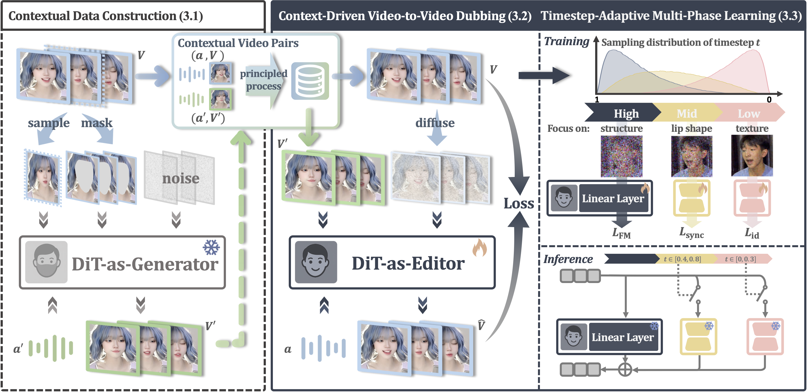

Demo Video
Qualitative Results on HDTF
Long Video Generation
Our editor demonstrates the capability to generate extended lip-sync videos (exceeding 1 min) while maintaining consistency, with no observable color or identity drift between the initial and final frames.
Method Overview

Key Features
Self-Bootstrapping, Context-Rich Dubbing
Learns from self-generated pairs and edits videos directly without explicit masks or reference frames, leveraging full-frame temporal context to cast dubbing as a complete editing task rather than partial inpainting.
Accurate, Natural Lip-Sync
Produces speech-aligned lip movements while avoiding leakage and off-target edits, delivering accurate, artifact-free synchronization that reads naturally on frame and in motion.
Consistent Identity, Unlimited Duration
Preserves face identity and head pose across extended sequences by exploiting rich video context, maintaining temporal consistency without drift or identity collapse even in unlimited-duration dubbing.
Robust to Occlusions, Lighting, and Styles
Handles occlusions and challenging lighting, and generalizes to stylized, non-human, and AI-generated characters, extending beyond traditional face-dependent methods.
Acknowledgments
We gratefully acknowledge the open resources provided by Civitai, Mixkit, and Pexels. The demonstration videos include both real-world and generative materials sourced from these platforms, which help illustrate the generality and robustness of our dubbing system. All materials are used for research and demonstration purposes only.
Ethical Considerations
All video and audio materials presented on this page are used solely for academic research to illustrate the technical scope of visual dubbing. No identity, likeness, or content ownership beyond research illustration is implied.
If you have any questions, please contact: hexu18@mails.tsinghua.edu.cn